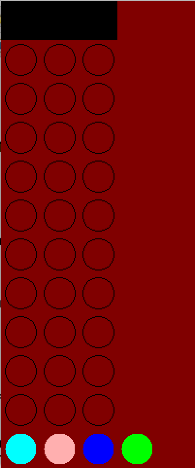
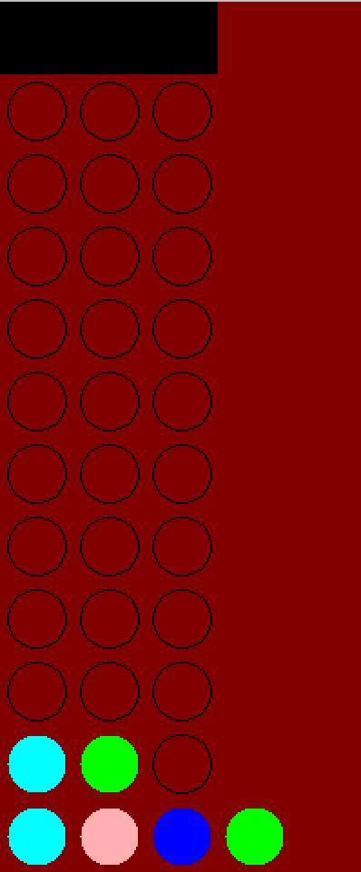

Assignment 8: Mastermind
Goals: Design a game.
You should submit one .java file containing the solution to this problem.
Be sure to properly test your code and write purpose statements for your methods. A lack of tests and documentation will result in a lower grade! Remember that testing requires you to make some examples of data in an examples class.
Mastermind
You are going to design the classic code-cracking game Mastermind.
In Mastermind, a code is a sequence (list) of colors. The player enters what they think the sequence is, and then the game gives the player feedback on how accurate their guess is (more on this below). They then use this information to make a new, more informed guess, and the process repeats. The game ends when the player enters the correct sequence or they run out of guesses (a win/loss, respectively), and the correct sequence is revealed to the player.
Note that the correct sequence is randomly generated for every new game.
Your game will use the javalib.funworld library, which provides an implementation of Worlds and bigBang similar to what was used in CS 1. Read the documentation carefully for more information.
The Feedback
The feedback for a given guess is given in two numbers: exact matches and inexact matches. For example if the correct sequence is:

and the player enters:

the player would be told they got two exact matches (for the first and fourth entries in the guess), and two inexact matches (for the second and third entries in the guess).
Exact matches are only counted for colors that appear in the exact same place in the guess and the correct sequence.
The entries in the guess sequence that are part of the exact matches are never counted towards the inexact matches.
Every entry in the correct sequence can only be used once for an inexact match.
Be sure you can work through and understand this example. Draw appropriate lines between the correct and guessed sequence to see why the last two blues in the guess don’t count toward the inexact matches, and why the red and green at the end of the correct sequence don’t count toward the inexact matches.
Configurability, Data Constraints and Assumptions
Whether or not duplicate entries are allowed in the correct sequence (in the example given above, they are)
The length of the sequence to be guessed (in the example given above, 6)
The number of guesses a player is allowed
A list of colors that the sequence could have been made from, which also serves as the colors a player can guess
One of your constructors should take in exactly these four parameters, and your program should be designed such that this data is all a player (or I) would have to change to reconfigure their gameplay experience.
The length of the sequence to be guessed is 0 or less
The number of guesses a player is allowed is 0 or less
The length of the list of colors is 0
Duplicates are disallowed and the length of the sequence to be guessed is greater than the length of the list of colors
The colors in the list of colors are unique
The list of colors will never be longer than 9 entries
User Interaction
The user uses three kinds of keys to interact with the game: numbers, enter, and backspace.
The player uses numbers to build up a guess for the sequence, with each number corresponding to one color. For example, if the list of colors the player could choose from is red, blue and green, 1 would correspond to red, 2 to blue, and 3 to green. Note that once a player has entered a sufficient number of colors for their current guess, additional number keystrokes should be ignored, as should numbers bigger than the number of colors than there are to guess.
Once a player has entered as many colors for their current guess as the length of the sequence they are guessing is, the player submits their guess with the enter key. The game then reveals the number of exact and inexact matches they got for that guess. If the guess was correct or the player has run out of guesses, the game then ends.
If a player is in the middle of entering a guess and wants to change it, they should be able to use backspace to clear the last entry they made in their unfinished guess (if a color has been entered at all).
Any other keystrokes should be ignored.
1 Game Visualization
When the game is launched, the player should see the colors they have to choose from at the bottom of the screen, the hidden, correct sequence at the top, and a grid for guesses that will be filled.
For example, in a game where the colors are cyan, pink, blue, and green, there are 10 guesses to be made, and the sequence size is 3, the game might look something like this:

In this example, there are more colors to guess than there are possible colors in the sequence: this won’t always be the case, and your game should be able to support any possible configuration within the data constraints and assumptions outlined above.
Guesses should be filled from the bottom-right up to the top-left.
Continuing the example above, after entering 1 and 4, for cyan and green, the game would look like this:

Backspaces should clear the latest color the player has entered (so long as they have not submitted their guess and received feedback).
Continuing the example above, after pressing backspace and then 3 and 2, for blue and pink, the game would look like this:

After pressing enter on a full guess, the player should be shown how many exact matches and how many inexact matches they received next to the guess that was just entered.
For example:

The game continues in this fashion. Halfway through the game, it might look like this:
After the player enters the correct guess, they should be given a congratulatory note that does not interfere visually with other gameplay elements, and the sequence should be revealed at the top:

If the player runs out of guesses and never guesses correctly, they should be rebuked with a note that does not interfere visually with other gameplay elements, and the sequence should be revealed at the top:

Stop!
Now that you have a proper visual idea of the game, I recommend going back and re-reading the entire assignment up to this point. The rest of the writeup deals with technical matters which, while important, won’t be of much help if you don’t fully understand how the game should work.
Design Hint
A finished guess and unfinished guess each have a sequence of colors and each must be able to be drawn, but otherwise must relay different information and support different behavior.
The player is always interacting with exactly one unfinished guess, and must be able to view a list of finished guesses.
Getters, instanceof, Casting, Exceptions, etc.
As has been explained, reliance on getters, instanceof, casting, fields of fields, and fields of parameters of another class are all poor design. The game can be designed without them, and you should avoid them. If you find you’re needing to use them, it’s a sign your code might be unideally designed.
Checking if a list’s length is 0 (outside of a data constraint check) to see if it’s empty in this game is a sign of bad design!
Remember that getFirst and getRest on lists that can be empty should be avoided, as empty lists don’t have first and rests. One helpful method you may want is an Color getIndex(int index) method on ILoColor, which will blow up if the index is bigger than or equal to the size of the list. This and and the ILoColor removeColor(Color color) method may help in when creating a random sequence of colors, and possibly in other places as well.
Some Java
While somewhat hacky, the easiest way to tell if a keystroke is between 1 and 9 is to see if "123456789" contains it.
To convert a numeric string s to an integer, use Integer.valueOf(s). Beware this will throw an exception if s is not the string of an integer.
To tell if two Colors are equal, use the equals method, like we do for Strings.
A Note About Randomness
There are two ways to generate random numbers in Java. The easiest is to use Math.random(), which generates a double between 0 (inclusive) and 1 (exclusive). You can multiply this number by some integer to make it bigger, then coerce to an int to produce a random integer in the range you wish. However, this is not easily testable: you’ll get different random values every time.
The better way to generate random numbers is: First, import java.util.Random at the top of your file. Next, create a new Random() object, and use its nextInt(int maxVal) method, which will give you a random integer between zero (inclusive) and maxVal (exclusive).
This is known as a "pseudorandom number generator", since the numbers aren’t really random if they can be reliably repeated...
One of them, to be used for testing, should take in a Random object whose seed value you specify. This way your game will be utterly predictable every single time you test it.
The second constructor should not take in a Random object, but should call the other constructor, and pass along a really random object:
import java.util.Random; class YourWorld { Random rand // The constructor for use in "real" games YourWorld() { this(new Random()); } // The constructor for use in testing, with a specified Random object YourWorld(Random rand) { this.rand = rand; ... } } Now, your tests can be predictable while your game can still be random, and the rest of your code doesn’t need to change at all.
Note: while it can be helpful and important to test random elements of your game, the only randomness should occur in your constructor. If you’re finding testing this difficult, move on to other parts of the game and come back to it later.